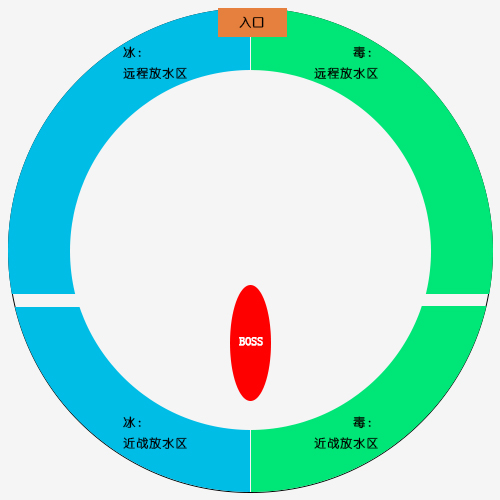

深渊指挥官西瓦拉用冰霜烙印或剧毒烙印标记附近所有的玩家。
接触永远相反印记的玩家，或收到相反元素的伤害后，玩家会收到（不稳定混合物）的影响。
说明：请谨记同性相吸概念，不要跟不同标记的人站在一起。
用冰冷的烙印标记玩家，每1秒造成2391点冰霜伤害，并使移动速度降低5%，该效果可叠加。
说明：就是有伤害，别怕，治疗会加你，注意下自己的能量条。
冰霜烙印在玩家的血管中流动，缓缓地将其冻结，如果玩家未持续移动，则会冻结。
说明：中了冰霜烙印以后，没事走两步，不要让自己的能量条长满。
目标的身体变成寒冰，使其冰冻8秒。
说明：不确定是类似达萨罗被冻住，还是像FS一样被冻住，反正被冻住的都是猪。
用剧毒的烙印标记玩家，每3秒造成5692点自然伤害，并使收到的治疗效果降低5%，该效果可叠加。
说明：就是有伤害，别怕，治疗会加你，注意下自己的能量条。
剧毒烙印在玩家的血管中流动，如果玩家持续移动，则变为癫狂。
说明：中了剧毒烙印以后，没事别乱动，不要让自己的能量条长满。
目标的精神变得狂乱，使其迷惑8秒。
说明：就是迷惑，不确定能不能被驱散什么的，反正被迷惑的都是猪。
混合毒药在玩家体内催化，使其爆炸，每1秒对所有梦游造成5690点自然伤害，持续3秒。
说明：请明白异性相斥特性，不要跟不同标记的人站在一起。
碾压目标，造成417322点物理伤害并由目标和5码内的所有玩家分摊，此外碾压回响还会施放一道震荡波，将所有玩家击退。
说明：简单来说就是集合分摊，或者T自己开技能单吃。如果选择分摊，要主要背后的朝向不能离水太近，不能有“异性”。
攻击有一定几率施加白霜或脓毒污染没回根据目标已有的奇美拉印记施加相应的效果。
导致目标的冰霜烙印开始流血，每1秒造成2525点冰霜伤害，持续10秒，此效果可叠加。
当效果消失时会在目标位置制造一片冰霜之地，叠加的层数会决定它的大小。
说明：就是T会叠DEBUFF叠到差不多层左右就换T去外边放水。其他人没事别踩水。
冰冻的地面冻住站在上面的所有玩家，造成37932点冰霜伤害，并施加冰霜烙印效果。
说明：谁踩谁是猪。
导致目标的剧毒烙印开始流血，每1秒造成2525点自然伤害，持续10秒，此效果可叠加。
当效果消失时会在目标位置制造一片败血之地，叠加的层数会决定它的大小。
说明：就是T会叠DEBUFF叠到差不多层左右就换T去外边放水。其他人没事别踩水
腐烂的地面使再战上面的所有玩家中毒，造成37932点自然伤害并施加剧毒烙印效果。
说明：谁踩谁是猪
施法者发射一连串剧毒箭和寒冰箭，对命中的每个玩家造成冰霜或自然伤害，并施加冰霜烙印或剧毒烙印效果之一。
深渊指挥官西瓦拉的能量达到100时会施放致命弹幕。
说明：据说放这个技能之前会有法阵出现，看好自己标记对应的颜色站过去，别走到另一个颜色上去。
使随机玩家和其奇美拉印记产生溢流。
使一名玩家及其身上的冰霜烙印于7秒内爆炸，造成303323点冰霜伤害，由5码范围内所有玩家分摊，并制造出一滩冰霜之地。
说明：可以单吃，炸的时候把水放边上，不能单吃的随便2,3个人去分摊。
冰冻的地面冻住站在上面的所有玩家，造成37932点冰霜伤害，并施加冰霜烙印效果。
说明：谁踩谁是猪
使一名玩家及其身上的剧毒烙印于7秒后爆炸，造成303434点自然伤害，由5码内的所有玩家分摊，并且会产生一片败血之地。
说明：可以单吃，炸的时候把水放边上，不能单吃的随便2,3个人去分摊。
腐烂的地面使再战上面的所有玩家中毒，造成37932点自然伤害并施加剧毒烙印效果。
说明：谁踩谁是猪
向随机玩家发射冰霜和剧毒十字弩箭。
向随机玩家发射一支冰霜弩箭，每1秒造成15178点冰霜伤害并对首个目标施加一层冰霜烙印，该目标也会被钉在原地。
说明：跟达萨罗一样，被戳到地上，需要其他人拔掉。
向随机玩家发射一支剧毒弩箭，每1秒造成15178点自然伤害并对首个目标施加一层剧毒烙印，该目标也会被钉在原地。
说明：跟达萨罗一样，被戳到地上，需要其他人拔掉。
施法者变换所有玩家的奇美拉印记效果，将冰霜烙印变换为剧毒烙印，反之亦然，并施加倒置之疾。
在英雄或更高难度下，（命运逆位）同时会将所有的（冰霜之地）和（败血之地）倒置。
更改目标的奇美拉印记，使其定身4秒，当效果消失时，目标会爆炸，并标记其4码范围内的所有玩家。
说明：就是分散站位，爆炸以后寻找同性，不要炸团。
谨记同性相吸，异性相斥的道理，没事别找异性。变性的时候分散。地上有啥多啥。放水去场地边上。
